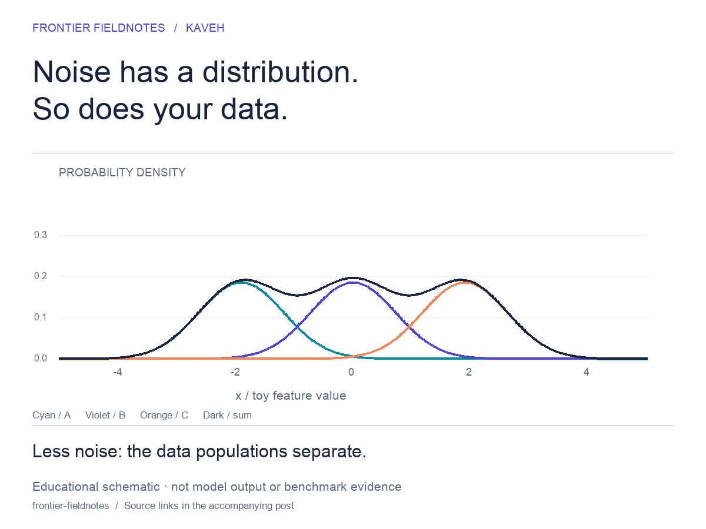

THE VISUAL LAB 01 / GENERATIVE MODELS
Make the mechanism visible.
A transport map, one particle at a timeILLUSTRATIVE MODEL
1 / 4
WEEKLY LIST 01 · FRONTIER WATCH VERIFIED 28 SEP 2026
Creative AI, at the frontier.
WEEKLY LIST 02 FUNDAMENTALS → INTERACTIVE GRAPHICS
What we should make visible next.
PRODUCT & COMMUNITY WATCH CHECKED 28 SEP 2026
What changed for filmmakers.
Signals from the community
Community anecdotes guide investigation. Vendor announcements establish advertised features, not independent quality rankings. This is a dated snapshot; weekly editions and midweek checks refresh it.
PUBLISHING STUDIO EDITION 001 · 28 SEP 2026
One idea. A complete publishing kit.
Edits stay in this browser session. Download to keep them. Drafts are prepared for your editorial review; nothing is posted to social accounts.
VISUAL ASSETSORIGINAL DIAGRAMS



Silent, captioned animation. Schematic particles, not model samples or benchmark evidence.
60-second narration & shot list ↓EDITORIAL RHYTHM
MondayFrontier list + visual fundamentals list
Tue–FriMeaningful research & product changes only
MonthlyOne deeper synthesis for Medium